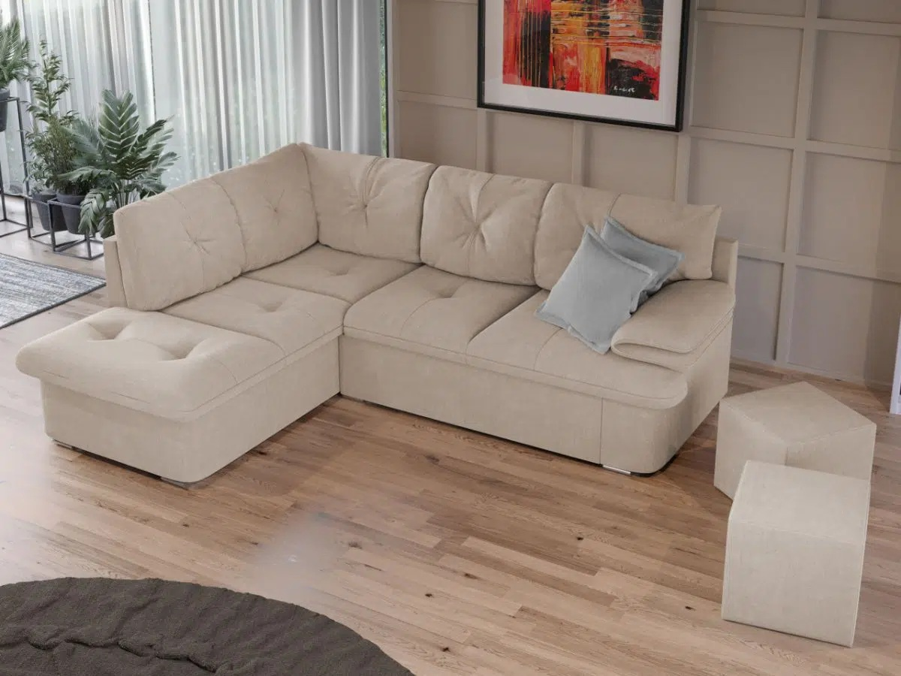

Colțare
Confort maxim pentru orice încăpere. Toate modelele noastre de living sunt extensibile.
1. Colțare (Extensibile)
Modele clasice în formă de L. Toate includ funcție de dormit.

Colțar "Galaxy"
Tip: Extensibil.
Dimensiuni: 280 x 180 cm.
Ladă depozitare: Da, sub șezlong.
Tapiterie: Stofă impermeabilă.
2. Colțare Forma U
Spațiu generos pentru întreaga familie.
Colțar U "Grand Family"
Dimensiuni: 160 x 320 x 160 cm.
Extensibil: Da (suprafață mare de dormit).
Lăzi depozitare: 2 bucăți.
3. Colțare pentru Bucătărie
Soluții compacte și practice pentru locul de luat masa.
Colțar Bucătărie "Bistro"
Caracteristică: Șezut rabatabil (spațiu depozitare).
Material: Piele ecologică (ușor de curățat).
Dimensiuni: 120 x 160 cm.
Include: Masă extensibilă opțional.